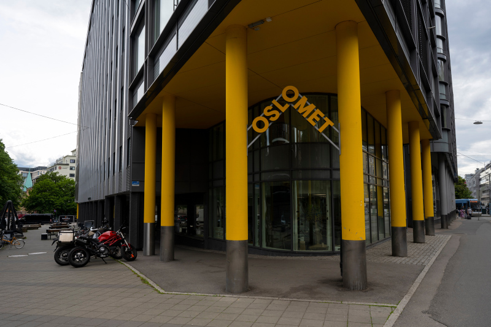
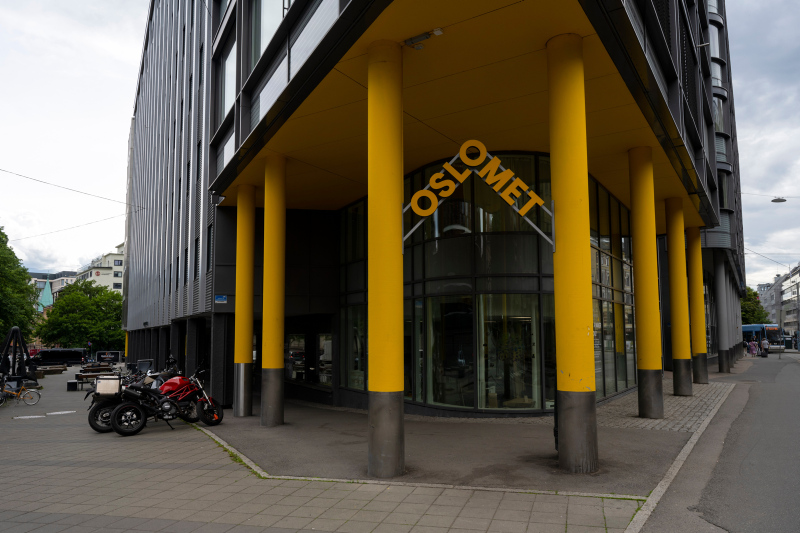

Turning a page
Here's to new beginnings
No animals were harmed in the production of this site (but a lot of Red Bull™ was "crushed").
The text above
Please forgive the lame joke above.
Your new home
No animals were harmed in the production of this site (but a lot of Red Bull™ was "crushed").
Please forgive the lame joke above.
We did see the message about the "OsloMet theme", but decided to keep our color scheme anyway simply because we like it. We stuck with the orange alternative though, not the yellow color that is typically associated with the logo.
Check out our page on accessibility by using the navigation menu at the top of the page, or by clicking here!